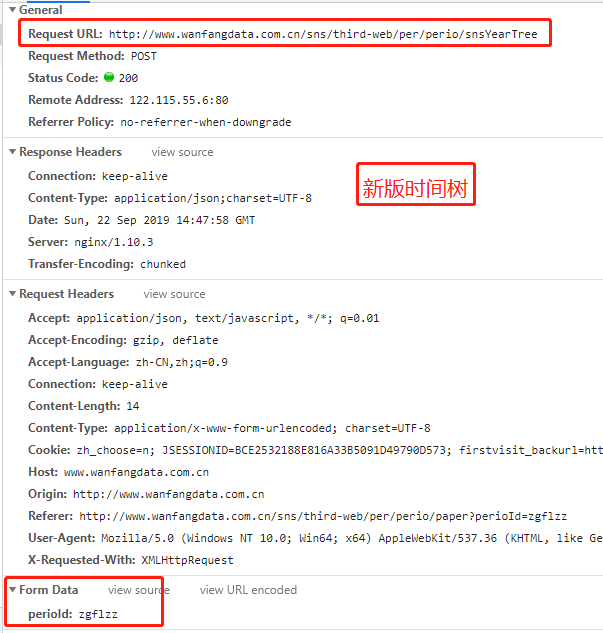

原文连接:https://www.cnblogs.com/ss-py/p/11569976.html
最近将万方数据的爬取代码进行了重构，速度大概有10w每小时吧，因为属于公司项目，代码暂时就不开源了，所以在这里先说说思路和一些注意事项吧，顺带吐槽一下万方。
先上图：
其实逻辑也蛮简单的，医学类的期刊分了16个大类，那么首先手动将这16大类所对应的唯一id拿下来拼接出该类型的url，然后翻页请求它就可以获得该类型下的每一篇期刊的信息。
然后我们拿到了每个期刊的id，就可以拼接出每一个期刊的主页url，但是这时就会发现，万方中的期刊主页路由是有两套的：我将其称之为新版/老版
新版：http://www.wanfangdata.com.cn/sns/user/qkzgf4
老版：http://www.wanfangdata.com.cn/perio/detail.do?perio_id=zgjhmy
这两个版本的url是不同的，那么如何甄别那一篇期刊是新版还是老版呢？毕竟我们现在只知道期刊的id，这里我用的办法是默认将每一篇期刊均视为老版，然后利用期刊id拼接出老版的url，
如果这篇期刊真是老版，那么就可以请求到期刊主页，如果它是新版，那么他就会被重定向到新版主页，最终我们只需要观察它的response.url就清楚了。
为什么说要分辨期刊属于新版还是老版呢，以为关系到下一步请求该期刊中所有文章的问题。
因为万方中每一个期刊都是规则的，有一个时间树，表明这篇文章属于哪个期刊、哪一年、哪一期，所以我们想要获取这个期刊中的所有文章，首先就需要解析这个期刊的时间树，但是新版和老版时间树是不一样的。
看图：

看到没，这就是上一步我们要来辨别期刊是新版还是老版的原因了。
既然知道了期刊是新版还是老版，那么下一步我们就需要来请求时间树以获得这个期刊的所有年份和每一年有多少期，以为下一步请求文章内需要用到这些信息。
本来请求到时间树再进行解析，拿到有用信息后根据每一期每一期的请来求文章json应该是美滋滋的事情，但是得到的反馈却并不怎么好，因为我发现最终请求到的文章只有很少一部分，其他的都请求不到，返回空json，
我百思不得其解，然后就各种开始捣鼓，像什么换代理啊，换UA啊，加cookie啊是一顿操作，结果是一顿操作猛如虎，一看结果250，这就很尴尬，最终折腾了好久终于被我发现了问题得关键所在，那就是这个：
6.png)
看到没，时间树解析下来2019年共出了7期文章，给的是01，02直到07， 但是在请求时却是 1到 7，0没了。。。所以导致请求的结果都是空的。
但即使是这样，在请求每一期文章时还会有问题，只是这个问题只在老版本中出现，那就是在解析时间树后一期一期请求文章，按理说请求的结果都会是一个json，
但是在老版本这儿会是不是返回一个html,导致我程序报错，因为我都是将返回结果按照json来处理的，直到现在我都没搞明白为什么回突然不返回json而返回html，我猜应该是请求过快了吧。
所以我多加了一部处理，当发现返回的不是json时就将这个期刊的id+年份+期数放到redis中，然后另起一个job来从redis中将其取出来再此进行请求，请求到json就其从set中去除，不然就又将其放到set中，循环请求。
这样最终再解析请求到的这一期的文章json就得到文章内容了,文章的作者信息也在这个json中。
这就是整个流程了。 接下来是吐槽环节：
不得不说万方真的是太爱改版了，最开始叫万方医学，后来改为了万方数据，然后好巧不巧在我这次采集期间又又又改版了，而且被我当场发现了，并且从中发现了一个接口：
http://www.wanfangdata.com.cn/perio/page.do
这个接口是在万方改版期间出现的，改版前没有，改版后也没有，就只出现了一小会儿，现在网页中是看不到它的
这个接口是用来请求那16个大类中又哪些期刊的，返回的json中包含了各个期刊的所有信息，比期刊主页展示的信息要全的多，并且有两点对我的工作有了很大的帮助，本身每个期刊的时间树都是要请求一次的，这样无疑会拖慢爬虫的速度，而且会出现请求不到的情况，在这个接口中却包含了期刊的时间树，还有一个就是本身想要获取这个期刊的影响因子的话，是需要请求期刊主页来解析页面的，现在也不用了，json中也有了，省了不少事儿，但是这个接口是不在万方官网中显示的，说明他们现在展示时用的不是这个接口，当初只是临时用了一会儿，以后会不会消失，不清楚。
这是请求这个接口的formdata: (code_name是那16大类的唯一标识)
最后，打个广告: 想了解更多Python关于爬虫、数据分析的内容，获取大量爬虫爬取到的源数据，欢迎大家关注我的微信公众号：悟道Python